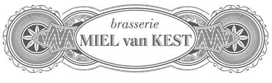

About Me
Let me tell you a bit about me...
BIO
Hi. My name is Christopher (a.k.a. Chris to my friends). I was born in Port Elizabeth, South Africa. I moved to Belgium when I was 16 years old and been living here ever since.
I have had a great interest in computers, but due to circumstances, it has stayed a hobby.
Brasserie Miel Van Kest
Sous Chef
Started as a side job after school as a dishwasher and ended up becoming Sous Chef after a short period working in the kitchen.
B-Post
DSV
Business Change Manager (Air)
After the migration of Uti to DSV, my position within the company changed several times. Customer Service agent -> x-dock co-ordinator -> Key-Client Service Agent -> Business Support Agent -> present, Business Support Manager.
Providing Sales, Operations and clients with required reports. Providing excel solutions for operational procedures. Providing first person support for the main logistics software (Wisetech Global's CargoWise One application).